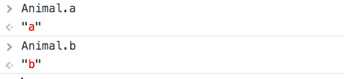
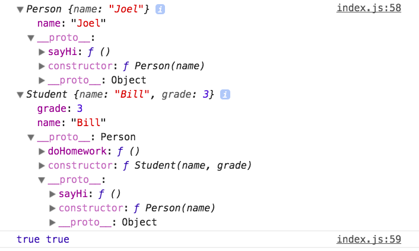
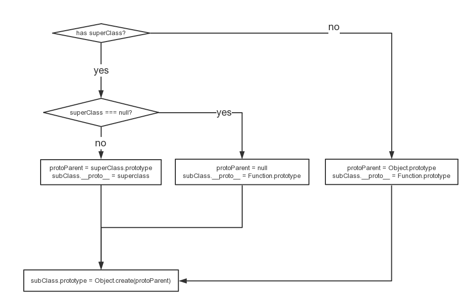
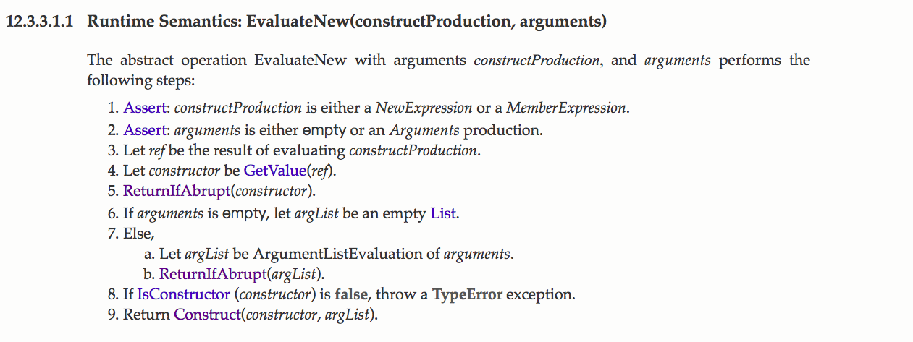
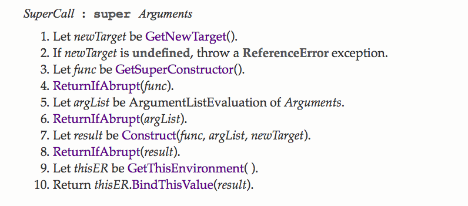
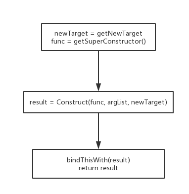

<!DOCTYPE html>
<html lang="en">

<!-- Head tag -->
<head>
    <meta charset="utf-8">
    <meta http-equiv="X-UA-Compatible" content="IE=edge">
    <meta name="google-site-verification" content="xBT4GhYoi5qRD5tr338pgPM5OWHHIDR6mNg1a3euekI" />
    <meta name="viewport" content="width=device-width, initial-scale=1">
    <meta name="description" content="">
    <meta name="keyword"  content="">
    <link rel="shortcut icon" href="/img/favicon.ico">

    <title>
        
          从extend看JS继承 - Joel的博客 | Joel&#39;s Blog
        
    </title>

    <link rel="canonical" href="http://kaijun.rocks/2018/02/28/JS-extend/">

    <!-- Bootstrap Core CSS -->
    <link rel="stylesheet" href="/css/bootstrap.min.css">

    <!-- Custom CSS -->
    <link rel="stylesheet" href="/css/hux-blog.min.css">

    <!-- Pygments Highlight CSS -->
    <link rel="stylesheet" href="/css/highlight.css">

    <!-- Custom Fonts -->
    <!-- <link href="https://maxcdn.bootstrapcdn.com/font-awesome/4.3.0/css/font-awesome.min.css" rel="stylesheet" type="text/css"> -->
    <!-- Hux change font-awesome CDN to qiniu -->
    <link href="https://cdn.staticfile.org/font-awesome/4.5.0/css/font-awesome.min.css" rel="stylesheet" type="text/css">


    <!-- Hux Delete, sad but pending in China
    <link href='http://fonts.googleapis.com/css?family=Lora:400,700,400italic,700italic' rel='stylesheet' type='text/css'>
    <link href='http://fonts.googleapis.com/css?family=Open+Sans:300italic,400italic,600italic,700italic,800italic,400,300,600,700,800' rel='stylesheet' type='text/
    css'>
    -->


    <!-- HTML5 Shim and Respond.js IE8 support of HTML5 elements and media queries -->
    <!-- WARNING: Respond.js doesn't work if you view the page via file:// -->
    <!--[if lt IE 9]>
        <script src="https://oss.maxcdn.com/libs/html5shiv/3.7.0/html5shiv.js"></script>
        <script src="https://oss.maxcdn.com/libs/respond.js/1.4.2/respond.min.js"></script>
    <![endif]-->

    <!-- ga & ba script hoook -->
    <script></script>
</head>


<!-- hack iOS CSS :active style -->
<body ontouchstart="">

    <!-- Navigation -->
<nav class="navbar navbar-default navbar-custom navbar-fixed-top">
    <div class="container-fluid">
        <!-- Brand and toggle get grouped for better mobile display -->
        <div class="navbar-header page-scroll">
            <button type="button" class="navbar-toggle">
                <span class="sr-only">Toggle navigation</span>
                <span class="icon-bar"></span>
                <span class="icon-bar"></span>
                <span class="icon-bar"></span>
            </button>
            <a class="navbar-brand" href="/">Joel&#39;s Blog</a>
        </div>

        <!-- Collect the nav links, forms, and other content for toggling -->
        <!-- Known Issue, found by Hux:
            <nav>'s height woule be hold on by its content.
            so, when navbar scale out, the <nav> will cover tags.
            also mask any touch event of tags, unfortunately.
        -->
        <div id="huxblog_navbar">
            <div class="navbar-collapse">
                <ul class="nav navbar-nav navbar-right">
                    <li>
                        <a href="/">Home</a>
                    </li>

                    

                        
                    

                        
                        <li>
                            <a href="/about/">About</a>
                        </li>
                        
                    

                        
                        <li>
                            <a href="/archives/">Archives</a>
                        </li>
                        
                    

                        
                        <li>
                            <a href="/tags/">Tags</a>
                        </li>
                        
                    
                    
                </ul>
            </div>
        </div>
        <!-- /.navbar-collapse -->
    </div>
    <!-- /.container -->
</nav>
<script>
    // Drop Bootstarp low-performance Navbar
    // Use customize navbar with high-quality material design animation
    // in high-perf jank-free CSS3 implementation
    var $body   = document.body;
    var $toggle = document.querySelector('.navbar-toggle');
    var $navbar = document.querySelector('#huxblog_navbar');
    var $collapse = document.querySelector('.navbar-collapse');

    $toggle.addEventListener('click', handleMagic)
    function handleMagic(e){
        if ($navbar.className.indexOf('in') > 0) {
        // CLOSE
            $navbar.className = " ";
            // wait until animation end.
            setTimeout(function(){
                // prevent frequently toggle
                if($navbar.className.indexOf('in') < 0) {
                    $collapse.style.height = "0px"
                }
            },400)
        }else{
        // OPEN
            $collapse.style.height = "auto"
            $navbar.className += " in";
        }
    }
</script>


    <!-- Main Content -->
    
<!-- Image to hack wechat -->
<!--  -->
<!--  -->

<!-- Post Header -->
<style type="text/css">
    header.intro-header{
        background-image: url('/img/home-bg.jpg')
    }
</style>
<header class="intro-header" >
    <div class="container">
        <div class="row">
            <div class="col-lg-8 col-lg-offset-2 col-md-10 col-md-offset-1">
                <div class="post-heading">
                    <div class="tags">
                        
                          <a class="tag" href="/tags/#JS" title="JS">JS</a>
                        
                    </div>
                    <h1>从extend看JS继承</h1>
                    <h2 class="subheading"></h2>
                    <span class="meta">
                        Posted by Joel on
                        2018-02-28
                    </span>
                </div>
            </div>
        </div>
    </div>
</header>

<!-- Post Content -->
<article>
    <div class="container">
        <div class="row">

    <!-- Post Container -->
            <div class="
                col-lg-8 col-lg-offset-2
                col-md-10 col-md-offset-1
                post-container">

                <p>PS：前置知识：原型链</p>
<h2 id="碎碎念"><a href="#碎碎念" class="headerlink" title="碎碎念"></a>碎碎念</h2><p>说到继承，第一印象就是红宝书里的各种方法，原型式继承、组合继承、寄生继承balabala。</p>
<p>初学JS的时候看到继承内心是崩溃的，人家py、java一个关键字就搞定了的东西你怎么能玩出这么多花样的。</p>
<p>其实这是语言设计层面的问题，JS并没有像java那种严格的面向对象系统，但是。。。uc</p>
<p>我们知道面向对象系统其实是可以用数据+过程的方式实现的（没错我说的就是SICP的第三章），那么JS提供了什么原材料让我们来实现面向对象呢？</p>
<p>JavaScript是一门基于原型、函数先行的语言，是一门多范式的语言，它支持面向对象编程，命令式编程，以及函数式编程（来自<a href="https://zh.wikipedia.org/wiki/JavaScript" target="_blank" rel="noopener">wiki</a>）。</p>
<p>其实就是用原型啦，具体来说是原型链。</p>
<h2 id="原型链"><a href="#原型链" class="headerlink" title="原型链"></a>原型链</h2><h3 id="快速理解"><a href="#快速理解" class="headerlink" title="快速理解"></a>快速理解</h3><p>我们通过一道面试题来理解原型链（前方啰嗦预警。。。</p>
<figure class="highlight js"><table><tr><td class="gutter"><pre><span class="line">1</span><br><span class="line">2</span><br><span class="line">3</span><br><span class="line">4</span><br><span class="line">5</span><br><span class="line">6</span><br><span class="line">7</span><br><span class="line">8</span><br><span class="line">9</span><br><span class="line">10</span><br></pre></td><td class="code"><pre><span class="line"><span class="built_in">Object</span>.prototype.a = <span class="string">'a'</span></span><br><span class="line"></span><br><span class="line"><span class="built_in">Function</span>.prototype.b = <span class="string">'b'</span></span><br><span class="line"></span><br><span class="line"><span class="function"><span class="keyword">function</span> <span class="title">Animal</span>(<span class="params"></span>) </span>&#123;&#125;</span><br><span class="line"></span><br><span class="line"><span class="keyword">const</span> obj = <span class="keyword">new</span> Animal()</span><br><span class="line"></span><br><span class="line"><span class="built_in">console</span>.log(obj.a) <span class="comment">// 'a'</span></span><br><span class="line"><span class="built_in">console</span>.log(obj.b) <span class="comment">// undefined</span></span><br></pre></td></tr></table></figure>
<p>PS：<a href="#小疑问">太长不看</a></p>
<ol>
<li>新建的<code>obj</code>对象是构造函数<code>Animal</code>的实例</li>
<li>那么<code>obj</code>的<code>__proto__</code>属性指向<code>Animal.prototype</code></li>
<li><code>Animal.prototype</code>是一个对象，因此它的<code>__proto__</code>属性指向<code>Object.prototype</code></li>
<li>在<code>obj</code>中查找<code>a</code>属性而没有找到</li>
<li>去<code>obj.__proto__</code>继续查找，没有找到</li>
<li>去<code>obj.__proto__.__proto__</code>继续查找</li>
<li>找到属性<code>a</code>，返回它的值<code>&#39;a&#39;</code></li>
<li>在<code>obj</code>中查找<code>b</code>属性而没有找到</li>
<li>去<code>obj.__proto__</code>继续查找，没有找到</li>
<li>去<code>obj.__proto__.__proto__</code>继续查找，没有找到</li>
<li><code>obj.__proto__.__proto__.__proto__</code>为<code>null</code>，查找结束，没有找到<code>b</code>属性，返回<code>undefined</code></li>
</ol>
<p>这个<code>xxx.__proto__.__proto__.__proto__</code>就是原型链，其实是一系列关联起来的对象。</p>
<figure class="highlight js"><table><tr><td class="gutter"><pre><span class="line">1</span><br></pre></td><td class="code"><pre><span class="line">obj -&gt; Animal.prototype -&gt; <span class="built_in">Object</span>.prototype</span><br></pre></td></tr></table></figure>
<p>总结：原型链就是一系列关联起来的对象。</p>
<h3 id="小疑问"><a href="#小疑问" class="headerlink" title="小疑问"></a>小疑问</h3><p>那么我们的<code>b</code>属性在哪里呢？</p>
<p>其实在<code>Animal</code>构造函数上,或者说在所有的函数对象上。</p>
<p>我们知道函数字面量其实与下面这种写法是一样的(其实有区别，详见MDN):</p>
<figure class="highlight js"><table><tr><td class="gutter"><pre><span class="line">1</span><br></pre></td><td class="code"><pre><span class="line"><span class="keyword">const</span> Animal = <span class="keyword">new</span> <span class="built_in">Function</span>()</span><br></pre></td></tr></table></figure>
<p>此时的原型链：</p>
<figure class="highlight js"><table><tr><td class="gutter"><pre><span class="line">1</span><br><span class="line">2</span><br></pre></td><td class="code"><pre><span class="line"><span class="comment">// 一个构造函数的原型链</span></span><br><span class="line">Animal -&gt; <span class="built_in">Function</span>.prototype -&gt; <span class="built_in">Object</span>.prototype</span><br></pre></td></tr></table></figure>
<p>所以可以通过原型链取到<code>b</code>，甚至可以取到<code>a</code>。</p>
<blockquote>
<p>PS: 尤其需要注意的是：<code>Function.prototype</code>是一个函数对象。</p>
</blockquote>
<p></p>
<h2 id="ES5的继承"><a href="#ES5的继承" class="headerlink" title="ES5的继承"></a>ES5的继承</h2><figure class="highlight js"><table><tr><td class="gutter"><pre><span class="line">1</span><br><span class="line">2</span><br><span class="line">3</span><br><span class="line">4</span><br><span class="line">5</span><br><span class="line">6</span><br><span class="line">7</span><br><span class="line">8</span><br><span class="line">9</span><br><span class="line">10</span><br><span class="line">11</span><br><span class="line">12</span><br><span class="line">13</span><br><span class="line">14</span><br><span class="line">15</span><br><span class="line">16</span><br><span class="line">17</span><br><span class="line">18</span><br><span class="line">19</span><br><span class="line">20</span><br><span class="line">21</span><br><span class="line">22</span><br><span class="line">23</span><br><span class="line">24</span><br><span class="line">25</span><br><span class="line">26</span><br><span class="line">27</span><br><span class="line">28</span><br><span class="line">29</span><br><span class="line">30</span><br><span class="line">31</span><br></pre></td><td class="code"><pre><span class="line"><span class="comment">// 父类</span></span><br><span class="line"><span class="function"><span class="keyword">function</span> <span class="title">Person</span>(<span class="params">name</span>) </span>&#123;</span><br><span class="line">    <span class="keyword">this</span>.name = name</span><br><span class="line">&#125;</span><br><span class="line"></span><br><span class="line">Person.prototype.sayHi = <span class="function"><span class="keyword">function</span> (<span class="params"></span>) </span>&#123;</span><br><span class="line">    <span class="built_in">console</span>.log(<span class="string">'Hi, this is '</span>, <span class="keyword">this</span>.name)</span><br><span class="line">&#125;</span><br><span class="line"></span><br><span class="line"><span class="comment">// 子类</span></span><br><span class="line"><span class="function"><span class="keyword">function</span> <span class="title">Student</span>(<span class="params">name, grade</span>) </span>&#123;</span><br><span class="line">    <span class="comment">// 继承父类的属性</span></span><br><span class="line">    Person.call(<span class="keyword">this</span>, name)</span><br><span class="line">    </span><br><span class="line">    <span class="keyword">this</span>.grade = grade</span><br><span class="line">&#125;</span><br><span class="line"></span><br><span class="line"><span class="comment">// 继承父类的方法</span></span><br><span class="line">Student.prototype = <span class="built_in">Object</span>.create(Person.prototype, &#123;</span><br><span class="line">    <span class="keyword">constructor</span>: &#123;</span><br><span class="line">        value: Student,</span><br><span class="line">        writable: <span class="literal">true</span>,</span><br><span class="line">        configurable: <span class="literal">true</span>,</span><br><span class="line">        enumerable: <span class="literal">false</span>,</span><br><span class="line">    &#125;,</span><br><span class="line">&#125;)</span><br><span class="line"></span><br><span class="line"><span class="comment">// 子类自己的方法</span></span><br><span class="line">Student.prototype.doHomework = <span class="function"><span class="keyword">function</span> (<span class="params"></span>) </span>&#123;</span><br><span class="line">    <span class="built_in">console</span>.log(<span class="string">'so much homework!'</span>)</span><br><span class="line">&#125;</span><br></pre></td></tr></table></figure>
<p>可以看到，与<a href="https://veronicaf.github.io/JS-class/" target="_blank" rel="noopener">之前一篇文章</a>一样，构造函数本身和构造函数的<code>prototype</code>属性仍然是我们关注的重点。</p>
<p>完成继承的步骤：</p>
<ol>
<li>通过<code>new</code>关键字调用，新建一个子类的实例对象<code>this</code>（自动完成）</li>
<li>构造函数中调用父类的构造函数，来给<code>this</code>对象添加属性，子类实例就有了父类中定义的属性</li>
<li>修改构造函数的原型，主要是添加丢失的<code>constructor</code>属性，并将原型的<code>__prop__</code>属性设为父类的原型对象（处理原型链，通过<code>Object.create</code>完成）</li>
</ol>
<blockquote>
<p><code>Object.create</code>返回一个新的对象，将第一个参数设置为返回的对象的<code>__proto__</code></p>
</blockquote>
<p>看一下效果：<br><figure class="highlight js"><table><tr><td class="gutter"><pre><span class="line">1</span><br><span class="line">2</span><br><span class="line">3</span><br><span class="line">4</span><br></pre></td><td class="code"><pre><span class="line"><span class="keyword">const</span> p = <span class="keyword">new</span> Person(<span class="string">'Joel'</span>)</span><br><span class="line"><span class="keyword">const</span> s = <span class="keyword">new</span> Student(<span class="string">'Bill'</span>, <span class="number">3</span>)</span><br><span class="line"><span class="built_in">console</span>.log(p, s)</span><br><span class="line"><span class="built_in">console</span>.log(s <span class="keyword">instanceof</span> Student, s <span class="keyword">instanceof</span> Person)</span><br></pre></td></tr></table></figure></p>
<p></p>
<p>emmmm，行为符合预期，就是太啰嗦了。</p>
<p>而且如上文所说，这只是实现继承的其中一个范式，这意味着不同的人来写的话会有多种继承的写法，很杂乱。或者可以求助于工具库。</p>
<p><code>extend</code>关键字的出现就是为了解决上述两个问题。</p>
<h2 id="what-the-hell-does-extend-do"><a href="#what-the-hell-does-extend-do" class="headerlink" title="what the hell does extend do"></a>what the hell does extend do</h2><p>继续使用<a href="https://veronicaf.github.io/JS-class/" target="_blank" rel="noopener">上篇文章</a>的例子</p>
<figure class="highlight js"><table><tr><td class="gutter"><pre><span class="line">1</span><br><span class="line">2</span><br><span class="line">3</span><br><span class="line">4</span><br><span class="line">5</span><br><span class="line">6</span><br><span class="line">7</span><br><span class="line">8</span><br><span class="line">9</span><br><span class="line">10</span><br><span class="line">11</span><br><span class="line">12</span><br><span class="line">13</span><br><span class="line">14</span><br><span class="line">15</span><br><span class="line">16</span><br><span class="line">17</span><br><span class="line">18</span><br><span class="line">19</span><br><span class="line">20</span><br><span class="line">21</span><br><span class="line">22</span><br><span class="line">23</span><br><span class="line">24</span><br></pre></td><td class="code"><pre><span class="line"><span class="class"><span class="keyword">class</span> <span class="title">Person</span> </span>&#123;</span><br><span class="line">    <span class="keyword">constructor</span>(name) &#123;</span><br><span class="line">        <span class="keyword">this</span>.name = name</span><br><span class="line">    &#125;</span><br><span class="line"></span><br><span class="line">    sayHi() &#123;</span><br><span class="line">        <span class="built_in">console</span>.log(<span class="string">'Hi, this is '</span>, <span class="keyword">this</span>.name)</span><br><span class="line">    &#125;</span><br><span class="line"></span><br><span class="line">    waveArm = <span class="function"><span class="params">()</span> =&gt;</span> &#123;</span><br><span class="line">        <span class="built_in">console</span>.log(<span class="keyword">this</span>.name, <span class="string">'is waving arm'</span>)</span><br><span class="line">    &#125;</span><br><span class="line">&#125;</span><br><span class="line"></span><br><span class="line"><span class="class"><span class="keyword">class</span> <span class="title">Student</span> <span class="keyword">extends</span> <span class="title">Person</span> </span>&#123;</span><br><span class="line">    <span class="keyword">constructor</span>(name, grade) &#123;</span><br><span class="line">        <span class="keyword">super</span>(name)</span><br><span class="line">        <span class="keyword">this</span>.grade = grade</span><br><span class="line">    &#125;</span><br><span class="line"></span><br><span class="line">    doHomework() &#123;</span><br><span class="line">        <span class="built_in">console</span>.log(<span class="string">'so much homework!'</span>)</span><br><span class="line">    &#125;</span><br><span class="line">&#125;</span><br></pre></td></tr></table></figure>
<p>经过babel编译后的代码如下（上篇文章中出现过的函数不具体列出）：<br><figure class="highlight js"><table><tr><td class="gutter"><pre><span class="line">1</span><br><span class="line">2</span><br><span class="line">3</span><br><span class="line">4</span><br><span class="line">5</span><br><span class="line">6</span><br><span class="line">7</span><br><span class="line">8</span><br><span class="line">9</span><br><span class="line">10</span><br><span class="line">11</span><br><span class="line">12</span><br><span class="line">13</span><br><span class="line">14</span><br><span class="line">15</span><br><span class="line">16</span><br><span class="line">17</span><br><span class="line">18</span><br><span class="line">19</span><br><span class="line">20</span><br><span class="line">21</span><br><span class="line">22</span><br><span class="line">23</span><br><span class="line">24</span><br><span class="line">25</span><br><span class="line">26</span><br><span class="line">27</span><br><span class="line">28</span><br><span class="line">29</span><br><span class="line">30</span><br><span class="line">31</span><br><span class="line">32</span><br><span class="line">33</span><br><span class="line">34</span><br><span class="line">35</span><br><span class="line">36</span><br><span class="line">37</span><br><span class="line">38</span><br><span class="line">39</span><br><span class="line">40</span><br><span class="line">41</span><br><span class="line">42</span><br><span class="line">43</span><br><span class="line">44</span><br><span class="line">45</span><br><span class="line">46</span><br><span class="line">47</span><br><span class="line">48</span><br><span class="line">49</span><br><span class="line">50</span><br><span class="line">51</span><br><span class="line">52</span><br><span class="line">53</span><br><span class="line">54</span><br><span class="line">55</span><br><span class="line">56</span><br><span class="line">57</span><br><span class="line">58</span><br><span class="line">59</span><br><span class="line">60</span><br><span class="line">61</span><br><span class="line">62</span><br><span class="line">63</span><br><span class="line">64</span><br><span class="line">65</span><br><span class="line">66</span><br><span class="line">67</span><br><span class="line">68</span><br><span class="line">69</span><br><span class="line">70</span><br><span class="line">71</span><br><span class="line">72</span><br><span class="line">73</span><br><span class="line">74</span><br><span class="line">75</span><br><span class="line">76</span><br></pre></td><td class="code"><pre><span class="line"><span class="meta">'use strict'</span>;</span><br><span class="line"></span><br><span class="line"><span class="keyword">var</span> _createClass = <span class="function"><span class="keyword">function</span> (<span class="params"></span>) </span>&#123;</span><br><span class="line">    ...</span><br><span class="line">&#125;();</span><br><span class="line"></span><br><span class="line"><span class="function"><span class="keyword">function</span> _possibleConstructorReturn(<span class="params">self, call</span>) </span>&#123;</span><br><span class="line">    <span class="keyword">if</span> (!self) &#123;</span><br><span class="line">        <span class="keyword">throw</span> <span class="keyword">new</span> <span class="built_in">ReferenceError</span>(<span class="string">"this hasn't been initialised - super() hasn't been called"</span>);</span><br><span class="line">    &#125;</span><br><span class="line">    <span class="keyword">return</span> call &amp;&amp; (<span class="keyword">typeof</span> call === <span class="string">"object"</span> || <span class="keyword">typeof</span> call === <span class="string">"function"</span>) ? call : self;</span><br><span class="line">&#125;</span><br><span class="line"></span><br><span class="line"><span class="function"><span class="keyword">function</span> _inherits(<span class="params">subClass, superClass</span>) </span>&#123;</span><br><span class="line">    <span class="keyword">if</span> (<span class="keyword">typeof</span> superClass !== <span class="string">"function"</span> &amp;&amp; superClass !== <span class="literal">null</span>) &#123;</span><br><span class="line">        <span class="keyword">throw</span> <span class="keyword">new</span> <span class="built_in">TypeError</span>(<span class="string">"Super expression must either be null or a function, not "</span> + <span class="keyword">typeof</span> superClass);</span><br><span class="line">    &#125;</span><br><span class="line">    subClass.prototype = <span class="built_in">Object</span>.create(superClass &amp;&amp; superClass.prototype, &#123;</span><br><span class="line">        <span class="keyword">constructor</span>: &#123;</span><br><span class="line">            value: subClass,</span><br><span class="line">            enumerable: <span class="literal">false</span>,</span><br><span class="line">            writable: <span class="literal">true</span>,</span><br><span class="line">            configurable: <span class="literal">true</span></span><br><span class="line">        &#125;</span><br><span class="line">    &#125;);</span><br><span class="line">    <span class="keyword">if</span> (superClass) <span class="built_in">Object</span>.setPrototypeOf ? <span class="built_in">Object</span>.setPrototypeOf(subClass, superClass) : subClass.__proto__ = superClass;</span><br><span class="line">&#125;</span><br><span class="line"></span><br><span class="line"><span class="function"><span class="keyword">function</span> _classCallCheck(<span class="params">instance, Constructor</span>) </span>&#123;</span><br><span class="line">    ...</span><br><span class="line">&#125;</span><br><span class="line"></span><br><span class="line"><span class="keyword">var</span> Person = <span class="function"><span class="keyword">function</span> (<span class="params"></span>) </span>&#123;</span><br><span class="line">    <span class="function"><span class="keyword">function</span> <span class="title">Person</span>(<span class="params">name</span>) </span>&#123;</span><br><span class="line">        <span class="keyword">var</span> _this = <span class="keyword">this</span>;</span><br><span class="line"></span><br><span class="line">        _classCallCheck(<span class="keyword">this</span>, Person);</span><br><span class="line"></span><br><span class="line">        <span class="keyword">this</span>.waveArm = <span class="function"><span class="keyword">function</span> (<span class="params"></span>) </span>&#123;</span><br><span class="line">            <span class="built_in">console</span>.log(_this.name, <span class="string">'is waving arm'</span>);</span><br><span class="line">        &#125;;</span><br><span class="line"></span><br><span class="line">        <span class="keyword">this</span>.name = name;</span><br><span class="line">    &#125;</span><br><span class="line"></span><br><span class="line">    _createClass(Person, [&#123;</span><br><span class="line">        key: <span class="string">'sayHi'</span>,</span><br><span class="line">        value: <span class="function"><span class="keyword">function</span> <span class="title">sayHi</span>(<span class="params"></span>) </span>&#123;</span><br><span class="line">            <span class="built_in">console</span>.log(<span class="string">'Hi, this is '</span>, <span class="keyword">this</span>.name);</span><br><span class="line">        &#125;</span><br><span class="line">    &#125;]);</span><br><span class="line"></span><br><span class="line">    <span class="keyword">return</span> Person;</span><br><span class="line">&#125;();</span><br><span class="line"></span><br><span class="line"><span class="keyword">var</span> Student = <span class="function"><span class="keyword">function</span> (<span class="params">_Person</span>) </span>&#123;</span><br><span class="line">    _inherits(Student, _Person);</span><br><span class="line"></span><br><span class="line">    <span class="function"><span class="keyword">function</span> <span class="title">Student</span>(<span class="params">name, grade</span>) </span>&#123;</span><br><span class="line">        _classCallCheck(<span class="keyword">this</span>, Student);</span><br><span class="line"></span><br><span class="line">        <span class="keyword">var</span> _this2 = _possibleConstructorReturn(<span class="keyword">this</span>, (Student.__proto__ || <span class="built_in">Object</span>.getPrototypeOf(Student)).call(<span class="keyword">this</span>, name));</span><br><span class="line"></span><br><span class="line">        _this2.grade = grade;</span><br><span class="line">        <span class="keyword">return</span> _this2;</span><br><span class="line">    &#125;</span><br><span class="line"></span><br><span class="line">    _createClass(Student, [&#123;</span><br><span class="line">        key: <span class="string">'doHomework'</span>,</span><br><span class="line">        value: <span class="function"><span class="keyword">function</span> <span class="title">doHomework</span>(<span class="params"></span>) </span>&#123;</span><br><span class="line">            <span class="built_in">console</span>.log(<span class="string">'so much homework!'</span>);</span><br><span class="line">        &#125;</span><br><span class="line">    &#125;]);</span><br><span class="line"></span><br><span class="line">    <span class="keyword">return</span> Student;</span><br><span class="line">&#125;(Person);</span><br></pre></td></tr></table></figure></p>
<p>可以看到多了两个函数，分别是：</p>
<ul>
<li>_inherits</li>
<li>_possibleConstructorReturn</li>
</ul>
<p>我们依旧从最下面开始看。</p>
<p><code>Person</code>和<code>Student</code>两个变量分别是我们的父类和子类，<code>Student</code>变量保存的依旧是一个IIFE返回的函数。先看这个IIFE（调整了代码顺序，手动把函数声明提升了）。</p>
<figure class="highlight js"><table><tr><td class="gutter"><pre><span class="line">1</span><br><span class="line">2</span><br><span class="line">3</span><br><span class="line">4</span><br><span class="line">5</span><br><span class="line">6</span><br><span class="line">7</span><br><span class="line">8</span><br><span class="line">9</span><br><span class="line">10</span><br><span class="line">11</span><br><span class="line">12</span><br><span class="line">13</span><br><span class="line">14</span><br><span class="line">15</span><br><span class="line">16</span><br><span class="line">17</span><br><span class="line">18</span><br><span class="line">19</span><br><span class="line">20</span><br><span class="line">21</span><br></pre></td><td class="code"><pre><span class="line"><span class="keyword">var</span> Student = <span class="function"><span class="keyword">function</span> (<span class="params">_Person</span>) </span>&#123;</span><br><span class="line">    <span class="function"><span class="keyword">function</span> <span class="title">Student</span>(<span class="params">name, grade</span>) </span>&#123;</span><br><span class="line">        _classCallCheck(<span class="keyword">this</span>, Student);</span><br><span class="line"></span><br><span class="line">        <span class="keyword">var</span> _this2 = _possibleConstructorReturn(<span class="keyword">this</span>, (Student.__proto__ || <span class="built_in">Object</span>.getPrototypeOf(Student)).call(<span class="keyword">this</span>, name));</span><br><span class="line"></span><br><span class="line">        _this2.grade = grade;</span><br><span class="line">        <span class="keyword">return</span> _this2;</span><br><span class="line">    &#125;</span><br><span class="line"></span><br><span class="line">    _inherits(Student, _Person);</span><br><span class="line"></span><br><span class="line">    _createClass(Student, [&#123;</span><br><span class="line">        key: <span class="string">'doHomework'</span>,</span><br><span class="line">        value: <span class="function"><span class="keyword">function</span> <span class="title">doHomework</span>(<span class="params"></span>) </span>&#123;</span><br><span class="line">            <span class="built_in">console</span>.log(<span class="string">'so much homework!'</span>);</span><br><span class="line">        &#125;</span><br><span class="line">    &#125;]);</span><br><span class="line"></span><br><span class="line">    <span class="keyword">return</span> Student;</span><br><span class="line">&#125;(Person);</span><br></pre></td></tr></table></figure>
<h3 id="原型链的处理"><a href="#原型链的处理" class="headerlink" title="原型链的处理"></a>原型链的处理</h3><p>原型链的处理就看<code>_inherits</code>和<code>_createClass</code>两个函数。</p>
<p><code>_createClass</code>的详细内容在<a href="https://veronicaf.github.io/JS-class/" target="_blank" rel="noopener">上一篇文章</a>。</p>
<p>IIFE内部的<code>Student</code>函数就是子类的构造函数，先不看他，先关注<code>_inherits</code>函数。</p>
<figure class="highlight js"><table><tr><td class="gutter"><pre><span class="line">1</span><br><span class="line">2</span><br><span class="line">3</span><br><span class="line">4</span><br><span class="line">5</span><br><span class="line">6</span><br><span class="line">7</span><br><span class="line">8</span><br><span class="line">9</span><br><span class="line">10</span><br><span class="line">11</span><br><span class="line">12</span><br><span class="line">13</span><br><span class="line">14</span><br></pre></td><td class="code"><pre><span class="line"><span class="function"><span class="keyword">function</span> _inherits(<span class="params">subClass, superClass</span>) </span>&#123;</span><br><span class="line">    <span class="keyword">if</span> (<span class="keyword">typeof</span> superClass !== <span class="string">"function"</span> &amp;&amp; superClass !== <span class="literal">null</span>) &#123;</span><br><span class="line">        <span class="keyword">throw</span> <span class="keyword">new</span> <span class="built_in">TypeError</span>(<span class="string">"Super expression must either be null or a function, not "</span> + <span class="keyword">typeof</span> superClass);</span><br><span class="line">    &#125;</span><br><span class="line">    subClass.prototype = <span class="built_in">Object</span>.create(superClass &amp;&amp; superClass.prototype, &#123;</span><br><span class="line">        <span class="keyword">constructor</span>: &#123;</span><br><span class="line">            value: subClass,</span><br><span class="line">            enumerable: <span class="literal">false</span>,</span><br><span class="line">            writable: <span class="literal">true</span>,</span><br><span class="line">            configurable: <span class="literal">true</span></span><br><span class="line">        &#125;</span><br><span class="line">    &#125;);</span><br><span class="line">    <span class="keyword">if</span> (superClass) <span class="built_in">Object</span>.setPrototypeOf ? <span class="built_in">Object</span>.setPrototypeOf(subClass, superClass) : subClass.__proto__ = superClass;</span><br><span class="line">&#125;</span><br></pre></td></tr></table></figure>
<p><code>_inherits</code>函数的签名很好理解</p>
<ul>
<li>subClass：子类</li>
<li>superClass：父类</li>
</ul>
<p>再来看开头的<code>if</code>代码块。</p>
<figure class="highlight js"><table><tr><td class="gutter"><pre><span class="line">1</span><br><span class="line">2</span><br><span class="line">3</span><br></pre></td><td class="code"><pre><span class="line"><span class="keyword">if</span> (<span class="keyword">typeof</span> superClass !== <span class="string">"function"</span> &amp;&amp; superClass !== <span class="literal">null</span>) &#123;</span><br><span class="line">        <span class="keyword">throw</span> <span class="keyword">new</span> <span class="built_in">TypeError</span>(<span class="string">"Super expression must either be null or a function, not "</span> + <span class="keyword">typeof</span> superClass);</span><br><span class="line">&#125;</span><br></pre></td></tr></table></figure>
<p>它要求父类必须是个函数或者<code>null</code>。</p>
<blockquote>
<p>看到这儿你大概会疑惑：父类还能是<code>null</code>???是<code>null</code>的话继承个什么东西？？？这似乎与我们在ES5中的经验很不一样。因为ES5中父类肯定是一个函数。别着急，继续往下看。</p>
</blockquote>
<p>关注一下测试不通过时抛出的错误信息，这里所谓的”Super expression”其实就是父类的构造函数。</p>
<p>接下来就是我们喜闻乐见的处理原型链环节。与ES5中的区别仅仅在于父类为<code>null</code>时的处理。</p>
<figure class="highlight js"><table><tr><td class="gutter"><pre><span class="line">1</span><br><span class="line">2</span><br><span class="line">3</span><br><span class="line">4</span><br><span class="line">5</span><br><span class="line">6</span><br><span class="line">7</span><br><span class="line">8</span><br></pre></td><td class="code"><pre><span class="line">subClass.prototype = <span class="built_in">Object</span>.create(superClass &amp;&amp; superClass.prototype, &#123;</span><br><span class="line">        <span class="keyword">constructor</span>: &#123;</span><br><span class="line">            value: subClass,</span><br><span class="line">            enumerable: <span class="literal">false</span>,</span><br><span class="line">            writable: <span class="literal">true</span>,</span><br><span class="line">            configurable: <span class="literal">true</span></span><br><span class="line">        &#125;</span><br><span class="line">&#125;);</span><br></pre></td></tr></table></figure>
<p>两个分支：</p>
<ul>
<li>如果父类是<code>null</code>的话<code>Object.create</code>返回的就是一个没有<code>__proto__</code>属性的对象，也就是说原型链在此中断了。</li>
<li>否则与我们在ES5中的所做的一样。</li>
</ul>
<p>最后一个if代码块，整理格式后如下：</p>
<figure class="highlight js"><table><tr><td class="gutter"><pre><span class="line">1</span><br><span class="line">2</span><br><span class="line">3</span><br><span class="line">4</span><br><span class="line">5</span><br></pre></td><td class="code"><pre><span class="line"><span class="keyword">if</span> (superClass) &#123;</span><br><span class="line">    <span class="built_in">Object</span>.setPrototypeOf</span><br><span class="line">    ? <span class="built_in">Object</span>.setPrototypeOf(subClass, superClass)</span><br><span class="line">    : subClass.__proto__ = superClass;</span><br><span class="line">&#125;</span><br></pre></td></tr></table></figure>
<p>同样分为两种情况：</p>
<ol>
<li>父类为<code>null</code>，if代码块不执行，此时父类的<code>__proto__</code>指向<code>Function.prototype</code>，一个函数对象。</li>
<li>否则子类的<code>__proto__</code>设为父类构造函数,也是一个函数对象。这是在ES5中没有的操作，是ES6中的规定：子类的<code>__proto__</code>属性指向父类。</li>
</ol>
<p>原型链一节说过函数对象其实是<code>Function</code>构造函数的实例，这样处理之后构造函数的原型链如下</p>
<figure class="highlight js"><table><tr><td class="gutter"><pre><span class="line">1</span><br></pre></td><td class="code"><pre><span class="line">subClass -&gt; superClass -&gt; <span class="built_in">Function</span>.prototype -&gt; <span class="built_in">Object</span>.prototype</span><br></pre></td></tr></table></figure>
<p>而如果<code>superClass</code>是<code>null</code>呢？</p>
<figure class="highlight js"><table><tr><td class="gutter"><pre><span class="line">1</span><br></pre></td><td class="code"><pre><span class="line">subClass -&gt; <span class="built_in">Function</span>.prototype -&gt; <span class="built_in">Object</span>.prototype</span><br></pre></td></tr></table></figure>
<p>这特喵的跟一个普通的构造函数没区别啊。</p>
<p>这里贴一张图</p>
<p></p>
<p>这是我整理了<a href="https://www.ecma-international.org/ecma-262/6.0/#sec-runtime-semantics-classdefinitionevaluation" target="_blank" rel="noopener">ECMA-262 6th Edition</a>中<code>class</code>解析的一部分内容。结合这张图应该能将原型链的处理过程看的很清楚了。</p>
<blockquote>
<p>可以看到流程图是从有没有父类开始的，也就是说是从直接定义一个<code>class</code>还是通过<code>extend</code>继承一个父类开始的。</p>
</blockquote>
<h3 id="构造函数本身"><a href="#构造函数本身" class="headerlink" title="构造函数本身"></a>构造函数本身</h3><figure class="highlight js"><table><tr><td class="gutter"><pre><span class="line">1</span><br><span class="line">2</span><br><span class="line">3</span><br><span class="line">4</span><br><span class="line">5</span><br><span class="line">6</span><br><span class="line">7</span><br><span class="line">8</span><br></pre></td><td class="code"><pre><span class="line"><span class="function"><span class="keyword">function</span> <span class="title">Student</span>(<span class="params">name, grade</span>) </span>&#123;</span><br><span class="line">    _classCallCheck(<span class="keyword">this</span>, Student);</span><br><span class="line"></span><br><span class="line">    <span class="keyword">var</span> _this2 = _possibleConstructorReturn(<span class="keyword">this</span>, (Student.__proto__ || <span class="built_in">Object</span>.getPrototypeOf(Student)).call(<span class="keyword">this</span>, name));</span><br><span class="line"></span><br><span class="line">    _this2.grade = grade;</span><br><span class="line">    <span class="keyword">return</span> _this2;</span><br><span class="line">&#125;</span><br></pre></td></tr></table></figure>
<p><code>_classCallCheck</code>在上一篇文章分析过了。</p>
<p>重要的是<code>_possibleConstructorReturn</code>这个函数</p>
<figure class="highlight js"><table><tr><td class="gutter"><pre><span class="line">1</span><br><span class="line">2</span><br><span class="line">3</span><br><span class="line">4</span><br><span class="line">5</span><br><span class="line">6</span><br></pre></td><td class="code"><pre><span class="line"><span class="function"><span class="keyword">function</span> _possibleConstructorReturn(<span class="params">self, call</span>) </span>&#123;</span><br><span class="line">    <span class="keyword">if</span> (!self) &#123;</span><br><span class="line">        <span class="keyword">throw</span> <span class="keyword">new</span> <span class="built_in">ReferenceError</span>(<span class="string">"this hasn't been initialised - super() hasn't been called"</span>);</span><br><span class="line">    &#125;</span><br><span class="line">    <span class="keyword">return</span> call &amp;&amp; (<span class="keyword">typeof</span> call === <span class="string">"object"</span> || <span class="keyword">typeof</span> call === <span class="string">"function"</span>) ? call : self;</span><br><span class="line">&#125;</span><br></pre></td></tr></table></figure>
<p>函数签名似乎并没有给我们太多的信息，结合它的调用方式一起看：</p>
<ol>
<li>self：很简单，就是调用构造函数时内部的<code>this</code>对象</li>
<li>call：<code>(Student.__proto__ || Object.getPrototypeOf(Student)).call(this, name)</code></li>
</ol>
<p>来分析一下<code>call</code>是什么鬼</p>
<figure class="highlight js"><table><tr><td class="gutter"><pre><span class="line">1</span><br></pre></td><td class="code"><pre><span class="line">(Student.__proto__ || <span class="built_in">Object</span>.getPrototypeOf(Student)).call(<span class="keyword">this</span>, name)</span><br></pre></td></tr></table></figure>
<p>上文中我们已经知道了子类的<code>__proto__</code>被设置成了父类的构造函数或者<code>Function.prototype</code>，因此这里就是我们在ES5中做的“在子类中调用父类的构造函数”。</p>
<p>我们知道，一般的构造函数是不会有明确的返回值的，因为通过<code>new</code>关键字调用时如果不明确指定返回值的话默认会返回<code>this</code>，而这些构造函数直接调用时会返回<code>undefined</code>，</p>
<p><code>_possibleConstructorReturn</code>从名字就可以知道，如果父类的构造函数有明确的返回值（必须得是一个对象），那么就返回它，否则就返回当前的<code>this</code>对象。</p>
<p>那么问题来了，为什么有这种行为？</p>
<h2 id="从new关键字说起"><a href="#从new关键字说起" class="headerlink" title="从new关键字说起"></a>从new关键字说起</h2><p>要搞清楚这个问题得先知道<code>new</code>关键字做了什么，查阅ES标准：<br></p>
<p>可以看到<code>new</code>返回的是<code>Construct(constructor, argList)</code></p>
<blockquote>
<p>请留意这个函数，后文中多次提到。</p>
</blockquote>
<p>再来看<code>Construct</code>做了什么，标准在<a href="https://www.ecma-international.org/ecma-262/6.0/#sec-ecmascript-function-objects-construct-argumentslist-newtarget" target="_blank" rel="noopener">这里</a>，感兴趣的可以自己去看。</p>
<p>由于本文并不想多涉及环境变量的知识，因此尽量简略的解释<code>Construct</code>的行为。</p>
<p>每个函数内部都有一个<code>[[ConstructorKind]]</code>属性，当函数是<code>generator</code>或者继承了某个类的构造函数时（比如我们的<code>Student</code>），<code>kind</code>的值为“derived”，否则为“base”。</p>
<p><code>Construct</code>又调用了<code>constructor.[[construct]]</code></p>
<p>当<code>kind</code>为“base”，<code>[[construct]]</code>做了下面这些事：</p>
<ol>
<li>新建一个对象并处理原型链，使新建的对象成为构造函数的实例（特别注意：这个构造函数是指<code>new.target</code>指向的那个函数）</li>
<li>将当前环境中的<code>this</code>值绑定为这个新建的对象</li>
<li>执行函数体（此时我们的代码开始执行）</li>
<li>如果函数有明确的返回值并且返回值是一个<code>object</code>，返回它</li>
<li>否则返回<code>this</code></li>
</ol>
<p>当<code>kind</code>为“derived”，<code>[[construct]]</code>做了下面这些事：</p>
<ol>
<li>执行函数体（此时我们的代码开始执行，小tip：<code>super</code>也在这里才开始执行）</li>
<li>如果函数有明确的返回值并且返回值是一个<code>object</code>，返回它</li>
<li>否则返回<code>this</code></li>
</ol>
<p>看到区别了吗，第二种情况下没有给当前环境绑定<code>this</code>值，因此如果此时使用<code>this</code>值会报错：</p>
<p></p>
<p>这里就扯到了<code>super</code>关键字了</p>
<h3 id="super作为函数调用"><a href="#super作为函数调用" class="headerlink" title="super作为函数调用"></a>super作为函数调用</h3><p>ES5 的继承，实质是先创造子类的实例对象this，然后再将父类的方法添加到this上面（Parent.apply(this)）。ES6 的继承机制完全不同，实质是先创造父类的实例对象this（所以必须先调用super方法），然后再用子类的构造函数修改this。</p>
<p>上面这段话出自阮一峰老师<a href="http://es6.ruanyifeng.com/#docs/class-extends#super-关键字" target="_blank" rel="noopener">ECMAScript 6 入门</a>。</p>
<p>emmmmm，反正我第一眼看是不太理解的。</p>
<p>反正，从我们上面的分析来看，想必是<code>super()</code>绑定了<code>this</code>喽，继续看<code>super</code>的行为：</p>
<p></p>
<p>简化后的流程图：</p>
<p></p>
<p>图中：</p>
<ul>
<li><code>newTarget</code>是<code>new.target</code>指向的函数</li>
<li><code>func</code>是父类的构造函数</li>
<li>继续用这些参数调用<code>Construct</code></li>
<li>调用<code>Construct</code>是递归的，直到当<code>kind</code>为“base”或者某一函数有明确的返回值才会终止</li>
</ul>
<p>所以说所谓的“先创造父类的实例对象this”描述不太准确，它确实是在父类中被创建，但是被创建的其实还是子类的实例（它的<code>__proto__</code>指向子类的<code>prototype</code>），因为<code>new.target</code>并没有改变，始终是<code>new</code>关键字后跟的那个函数。</p>
<p>emmmm，在PY这种面向对象的语言中，实例由哪个类创建就是那个类的实例，但是在JS的原型式继承中似乎有点歧义。。。</p>
<h3 id="ES5继承存在的问题"><a href="#ES5继承存在的问题" class="headerlink" title="ES5继承存在的问题"></a>ES5继承存在的问题</h3><p>扯远了，回到<code>_possibleConstructorReturn</code>函数。</p>
<p>设想如下场景，在ES5中，继承<code>Array</code>构造函数。</p>
<p>那么在我们的ES5实现中，我们调用<code>Array.call(this, args)</code>，然而，这样调用不会对<code>this</code>作出任何修改，因为<code>Array</code>会忽略传入的<code>this</code>，这样我们<code>new</code>出来的就是一个空对象。</p>
<figure class="highlight js"><table><tr><td class="gutter"><pre><span class="line">1</span><br><span class="line">2</span><br><span class="line">3</span><br><span class="line">4</span><br><span class="line">5</span><br><span class="line">6</span><br><span class="line">7</span><br><span class="line">8</span><br><span class="line">9</span><br><span class="line">10</span><br><span class="line">11</span><br><span class="line">12</span><br><span class="line">13</span><br><span class="line">14</span><br><span class="line">15</span><br><span class="line">16</span><br><span class="line">17</span><br></pre></td><td class="code"><pre><span class="line"><span class="function"><span class="keyword">function</span> <span class="title">MyArr</span>(<span class="params"></span>) </span>&#123;</span><br><span class="line">    <span class="built_in">Array</span>.call(<span class="keyword">this</span>, <span class="built_in">arguments</span>)</span><br><span class="line">&#125;</span><br><span class="line"></span><br><span class="line">MyArr.prototype = <span class="built_in">Object</span>.create(<span class="built_in">Array</span>.prototype, &#123;</span><br><span class="line">    <span class="keyword">constructor</span>: &#123;</span><br><span class="line">        value: MyArr,</span><br><span class="line">        writable: <span class="literal">true</span>,</span><br><span class="line">        configurable: <span class="literal">true</span>,         <span class="attr">enumerable</span>: <span class="literal">true</span>,</span><br><span class="line">    &#125;,</span><br><span class="line">&#125;)</span><br><span class="line"></span><br><span class="line"><span class="keyword">const</span> arr = <span class="keyword">new</span> MyArr()</span><br><span class="line"></span><br><span class="line">arr[<span class="number">0</span>] = <span class="string">'JS'</span></span><br><span class="line"></span><br><span class="line"><span class="built_in">console</span>.log(arr.length) <span class="comment">// 0</span></span><br></pre></td></tr></table></figure>
<p>当我们想用ES5继承一个内置类型如<code>Array</code>类型时我们会丢失一些特殊的行为，例如<code>length</code>属性与数组中存储的元素个数的绑定，因为我们的实例并不是使用<code>Array</code>创建的。</p>
<p>但是我们也知道，ES5中这两种调用方式其实是一样的。</p>
<figure class="highlight js"><table><tr><td class="gutter"><pre><span class="line">1</span><br><span class="line">2</span><br></pre></td><td class="code"><pre><span class="line"><span class="built_in">Array</span>(<span class="number">5</span>) <span class="comment">// [empty × 5]</span></span><br><span class="line"><span class="keyword">new</span> <span class="built_in">Array</span>(<span class="number">5</span>) <span class="comment">// [empty × 5]</span></span><br></pre></td></tr></table></figure>
<p>也就是说<code>Array</code>忽略传入的<code>this</code>但是会明确返回一个<code>Array</code>对象。</p>
<p>而在上一节对<code>new</code>的分析中我们知道构造函数其实可以指定自己的返回值的，所以当遇到这种有明确返回值的父类，<code>babel</code>的做法是用父类的返回值替换子类的实例，这样就避免了出现上文所说的丢失特殊行为的现象。</p>
<p>但是这样我们的继承就无效了，因为返回的不是<code>this</code>，因此子类原型链上的东西全部丢失了。</p>
<h3 id="ES6如何解决这一问题"><a href="#ES6如何解决这一问题" class="headerlink" title="ES6如何解决这一问题"></a>ES6如何解决这一问题</h3><p>函数对象之所以被称为函数对象，是因为在内部有<code>[[call]]</code>和<code>[[construct]]</code>两个方法，在我们ES5的做法中，对父类构造函数其实调用的是<code>[[call]]</code>，而在ES6中，如果你仔细看了前文，就会发现<code>super</code>关键字调用的是<code>[[construct]]</code>。</p>
<p>这两个调用的最显著区别就是<code>new.target</code>的值（与环境变量有关）</p>
<ul>
<li>通过<code>[[call]]</code>调用构造函数，构造函数内部的<code>new.target</code>为<code>undefined</code></li>
<li>通过<code>[[construct]]</code>调用构造函数，构造函数内部的<code>new.target</code>为<code>new</code>关键字调用的那个函数</li>
</ul>
<p>上文也说了创建的实例的<code>__proto__</code>是根据<code>new.target</code>确认的，所以当以ES6的方式（<code>super</code>）来继承<code>Array</code>时，在我们碰不到的<code>Array</code>构造函数内部完成了原型链的处理，而这是<code>polyfill</code>无法做到的事。。。</p>
<p>此时，再回想一下<code>_possibleConstructorReturn</code>这个函数的行为，实在是一种无奈之举啊。。。</p>
<h2 id="后记"><a href="#后记" class="headerlink" title="后记"></a>后记</h2><p>水平有限，文中难免有错误，欢迎指正。</p>
<p>关于<code>super</code>的其他方面本文没有涉及。</p>
<p>个人还是比较喜欢语法糖的，毕竟用着爽。</p>
<p>真是拖了好久才写出来。。。<br><br>毕设加实习着实有点忙。。</p>
<p>不过好歹是怼出来了。</p>
<hr>
<p>EOF</p>


                <hr>

                

                <ul class="pager">
                    
                        <li class="previous">
                            <a href="/2018/02/28/2018-02-28/" data-toggle="tooltip" data-placement="top" title="2018-02-28">&larr; Previous Post</a>
                        </li>
                    
                    
                        <li class="next">
                            <a href="/2018/02/26/2018-02-26/" data-toggle="tooltip" data-placement="top" title="2018-02-26">Next Post &rarr;</a>
                        </li>
                    
                </ul>

                

                
                <!-- disqus 评论框 start -->
                <div class="comment">
                    <div id="disqus_thread" class="disqus-thread"></div>
                </div>
                <!-- disqus 评论框 end -->
                

            </div>
    <!-- Side Catalog Container -->
        

    <!-- Sidebar Container -->

            <div class="
                col-lg-8 col-lg-offset-2
                col-md-10 col-md-offset-1
                sidebar-container">

                <!-- Featured Tags -->
                
                <section>
                    <!-- no hr -->
                    <h5><a href="/tags/">FEATURED TAGS</a></h5>
                    <div class="tags">
                       
                          <a class="tag" href="/tags/#JS" title="JS">JS</a>
                        
                    </div>
                </section>
                

                <!-- Friends Blog -->
                
                <hr>
                <h5>FRIENDS</h5>
                <ul class="list-inline">

                    
                </ul>
                
            </div>

        </div>
    </div>
</article>


<!-- disqus 公共JS代码 start (一个网页只需插入一次) -->
<script type="text/javascript">
    /* * * CONFIGURATION VARIABLES * * */
    var disqus_shortname = "hexo-theme-huxblog";
    var disqus_identifier = "http://kaijun.rocks/2018/02/28/JS-extend/";
    var disqus_url = "http://kaijun.rocks/2018/02/28/JS-extend/";

    (function() {
        var dsq = document.createElement('script'); dsq.type = 'text/javascript'; dsq.async = true;
        dsq.src = '//' + disqus_shortname + '.disqus.com/embed.js';
        (document.getElementsByTagName('head')[0] || document.getElementsByTagName('body')[0]).appendChild(dsq);
    })();
</script>
<!-- disqus 公共JS代码 end -->


<!-- async load function -->
<script>
    function async(u, c) {
      var d = document, t = 'script',
          o = d.createElement(t),
          s = d.getElementsByTagName(t)[0];
      o.src = u;
      if (c) { o.addEventListener('load', function (e) { c(null, e); }, false); }
      s.parentNode.insertBefore(o, s);
    }
</script>
<!-- anchor-js, Doc:http://bryanbraun.github.io/anchorjs/ -->
<script>
    async("https://cdn.bootcss.com/anchor-js/1.1.1/anchor.min.js",function(){
        anchors.options = {
          visible: 'always',
          placement: 'right',
          icon: '#'
        };
        anchors.add().remove('.intro-header h1').remove('.subheading').remove('.sidebar-container h5');
    })
</script>
<style>
    /* place left on bigger screen */
    @media all and (min-width: 800px) {
        .anchorjs-link{
            position: absolute;
            left: -0.75em;
            font-size: 1.1em;
            margin-top : -0.1em;
        }
    }
</style>


    <!-- Footer -->
    <!-- Footer -->
<footer>
    <div class="container">
        <div class="row">
            <div class="col-lg-8 col-lg-offset-2 col-md-10 col-md-offset-1">
                <ul class="list-inline text-center">
                
                
                

                

                

                

                

                </ul>
                <p class="copyright text-muted">
                    Copyright &copy; Joel&#39;s Blog 2018 
                    <br>
                    Theme by <a href="http://huangxuan.me">Hux</a> 
                    <span style="display: inline-block; margin: 0 5px;">
                        <i class="fa fa-heart"></i>
                    </span> 
                    Ported by <a href="http://blog.kaijun.rocks">Kaijun</a> | 
                    <iframe
                        style="margin-left: 2px; margin-bottom:-5px;"
                        frameborder="0" scrolling="0" width="91px" height="20px"
                        src="https://ghbtns.com/github-btn.html?user=kaijun&repo=hexo-theme-huxblog&type=star&count=true" >
                    </iframe>
                </p>
            </div>
        </div>
    </div>
</footer>

<!-- jQuery -->
<script src="/js/jquery.min.js"></script>

<!-- Bootstrap Core JavaScript -->
<script src="/js/bootstrap.min.js"></script>

<!-- Custom Theme JavaScript -->
<script src="/js/hux-blog.min.js"></script>


<!-- async load function -->
<script>
    function async(u, c) {
      var d = document, t = 'script',
          o = d.createElement(t),
          s = d.getElementsByTagName(t)[0];
      o.src = u;
      if (c) { o.addEventListener('load', function (e) { c(null, e); }, false); }
      s.parentNode.insertBefore(o, s);
    }
</script>

<!-- 
     Because of the native support for backtick-style fenced code blocks 
     right within the Markdown is landed in Github Pages, 
     From V1.6, There is no need for Highlight.js, 
     so Huxblog drops it officially.

     - https://github.com/blog/2100-github-pages-now-faster-and-simpler-with-jekyll-3-0  
     - https://help.github.com/articles/creating-and-highlighting-code-blocks/    
-->
<!--
    <script>
        async("http://cdn.bootcss.com/highlight.js/8.6/highlight.min.js", function(){
            hljs.initHighlightingOnLoad();
        })
    </script>
    <link href="http://cdn.bootcss.com/highlight.js/8.6/styles/github.min.css" rel="stylesheet">
-->


<!-- jquery.tagcloud.js -->
<script>
    // only load tagcloud.js in tag.html
    if($('#tag_cloud').length !== 0){
        async("http://kaijun.rocks/js/jquery.tagcloud.js",function(){
            $.fn.tagcloud.defaults = {
                //size: {start: 1, end: 1, unit: 'em'},
                color: {start: '#bbbbee', end: '#0085a1'},
            };
            $('#tag_cloud a').tagcloud();
        })
    }
</script>

<!--fastClick.js -->
<script>
    async("https://cdn.bootcss.com/fastclick/1.0.6/fastclick.min.js", function(){
        var $nav = document.querySelector("nav");
        if($nav) FastClick.attach($nav);
    })
</script>


<!-- Google Analytics -->


<!-- Baidu Tongji -->


<!-- Side Catalog -->


<!-- Image to hack wechat -->

<!-- Migrate from head to bottom, no longer block render and still work -->

</body>

</html>
